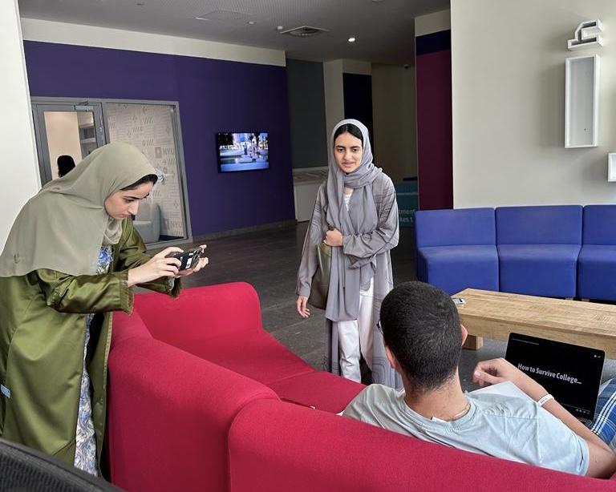
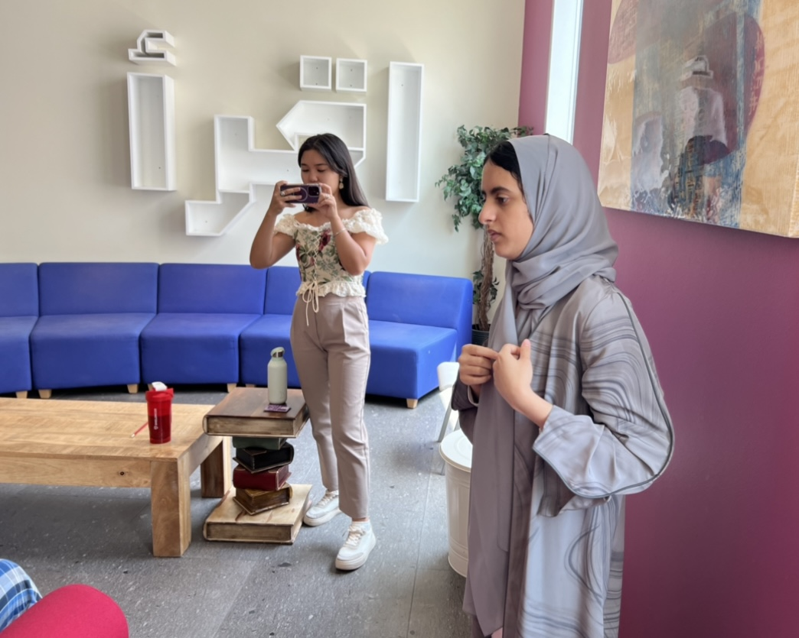
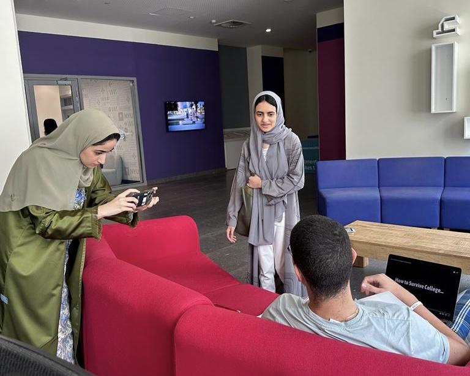
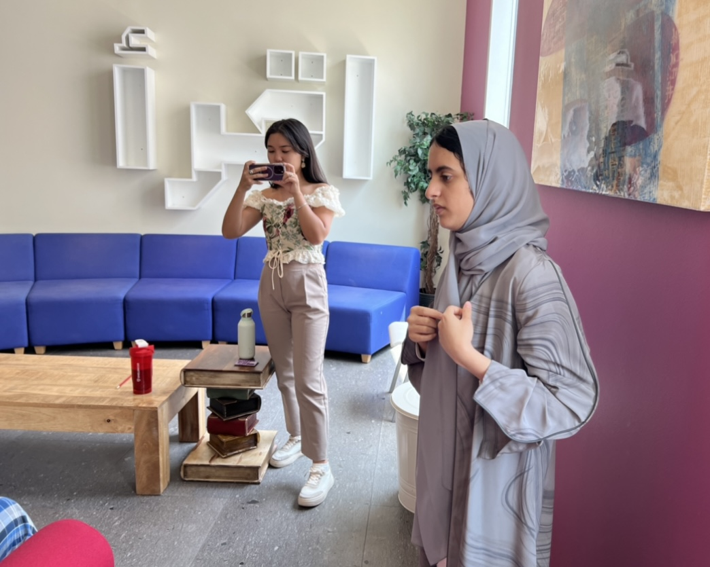

You Are Not Alone!
The Real Deal-lemma
Get ready to laugh and relate in our class project skit, 'What’s Your Major? Dilemma'! Discover the inspiration behind our website as we take you on a comedic journey through the ups and downs of choosing a major in this relatable & fun video.
×


Meet the dedicated team who brought this class project to life!


Explore behind-the-scenes snapshots capturing the moments of laughter, inspiration, and collaboration that fueled our creative process. From initial concept to final cut, join us as we unravel the story behind this entertaining video, offering you a glimpse into the dedication, challenges, and camaraderie that made it all possible.
Credits: Alreem AlAbbas, Darko Skulic, Diana Alibekova, Sara Al Mehairi